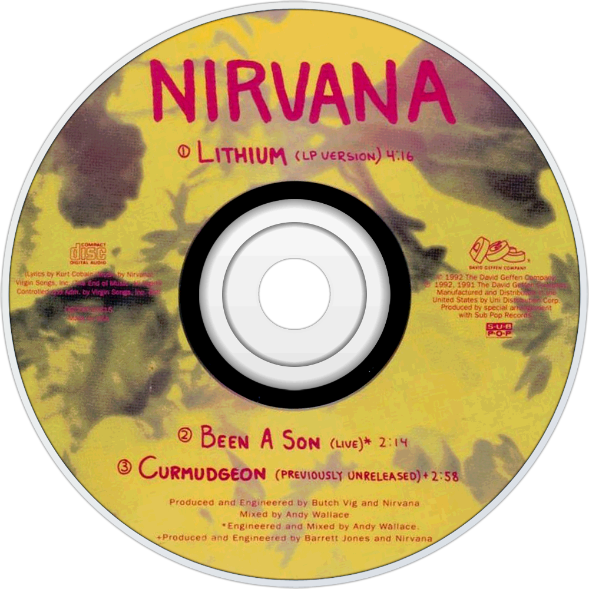
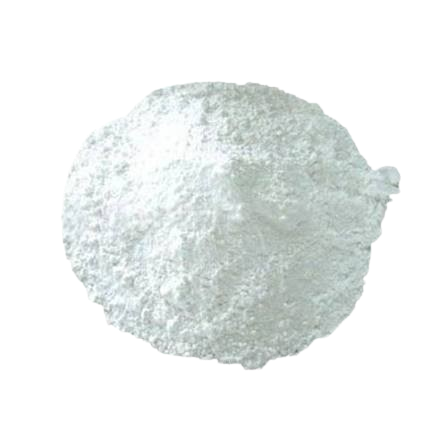
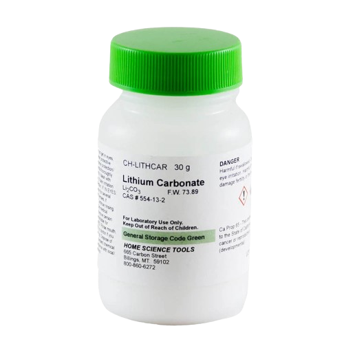

Lithium
O que é a metáfora central que Kurt Cobain usou em Lithium?
Autores
Nirvana / Kurt Cobain
Ano de lançamento
1991
Sinopse
O autor narra a história de um homem em meio a pensamentos de suicídio e melancolia profunda após a perda de sua namorada.
Motivo pela escolha
Gosto de roque em rol nao achava nada convencional que nao tivesse sido pego e minha mãe ja tomo isso


O que é?
O carbonato de lítio (Li2CO3), é um composto químico inorgânico derivado do lítio com o ânion carbonato (CO32-), muito usado na psiquiatria como medicamento para transtornos mentais
Como se classifica?
É classificado como sal pela sua composição iônica
reação entre base forte LiOH e ácido fraco H2CO3
Além do título, a narrativa da música Lithium do Nirvana descreve um personagem com problemas mentais que são comumente tratados pelo Carbonato de lítio
Eu gosto disso, eu não vou pirar Eu sinto sua falta, eu não vou pirar Eu te amo, eu não vou pirar Eu te matei, eu não vou pirar

Análise científica
Função desempenhada da substância na narrativa?
O carbonato de lítio age como a medicação implícita que impede o personagem de colapsar emocionalmente ("I'm not gonna crack").
A função possui fundamentação científica?
Sim. O lítio atua modulando os sistemas de neurotransmissão de dopamina e serotonina no cérebro.
Representação correta, parcialmente correta ou fictícia?
A representação é correta no impacto de estabilizar oscilações abruptas de comportamento e humor.
Aplicações reais
Como a substância é obtida no mundo real
Através do tratamento da extração de minerais como o espodumênio, ou pela evaporação de salmouras de água salgada subterrâneas.
Usos industriais, tecnológicos e cotidianos
Indústria de cerâmicas, produção de vidros especiais e como eletrólito à fabricação de baterias recarregáveis.
Riscos à saúde ou ao meio ambiente
Neurotoxicidade por dosagem excessiva no organism e contaminação severa de ambientes aquáticos por descarte incorreto de baterias.
Proof Online
1. Classificação do Carbonato de Lítio?
2. Na música, Lithium funciona como:
3. Uso tecnológico atual?